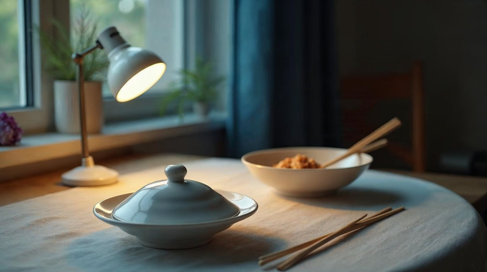
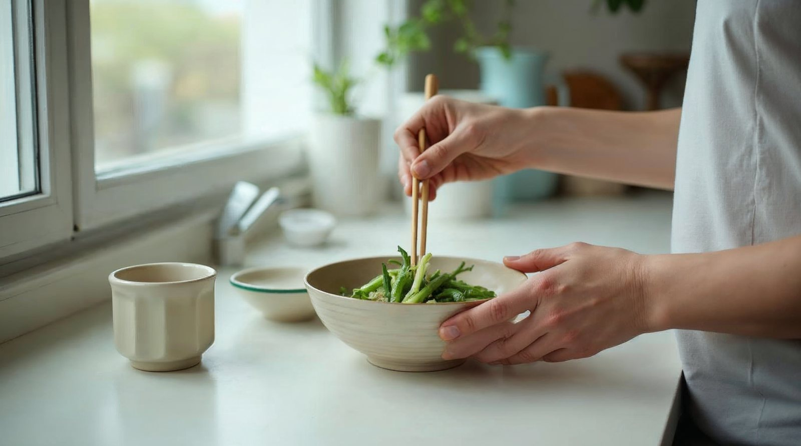

이종호 한의사 감수좋은꿈참사랑한의원 대표원장 (한의사 면허번호 19769)발행 2026-11-24 · 수정 2026-11-26
이 글의 차례
- 왜 이런 불편이 생길 수 있나요
- 왜 누우면 속쓰림이 더 심해질까요
- 먼저 이렇게 여쭙니다
- 일상에서 먼저 해 볼 수 있는 것
- 퇴근이 늦은 날, 이렇게 순서를 정해 보세요
- 상황별 예시
- 스스로 점검해 보세요
- 비슷한 불편과 어떻게 구분하나요?
- 한의원에서 함께 살필 수 있는 경우
- 속을 편하게 하는 가벼운 습관은 무엇이 있나요?
- 점심과 오후 간식도 함께 살펴봅니다
- 회식이 있는 날은 어떻게 하나요?
- 진료를 받는 동안에는 어떻게 지내면 좋을까요?
- 잠이 얕은 날에는 무엇을 더 살피나요?
- 주말에는 어떻게 지내면 좋을까요?
- 첫 진료 전에 무엇을 준비하면 좋을까요?
- 술과 담배는 어떻게 하면 좋을까요?
- 얼마나 지켜보고 언제 상담할까요?
- 이렇게 기록해 오시면 상담이 쉬워집니다
- 다시 속이 쓰리지 않으려면 무엇을 챙길까요?
- 이런 증상은 먼저 확인이 필요합니다
늦은 저녁 뒤 속이 쓰리고 새벽에 신물이 올라와 깬다면, 먹고 나서 2~3시간은 눕지 않고 늦은 저녁의 양과 메뉴를 가볍게 바꾸는 것부터 해 보시길 권합니다. 상도역에 내려 집에 오면 밤 9~10시가 넘어 배달 음식으로 저녁을 해결하는 직장인에게서 자주 듣는 이야기입니다.
퇴근 시간 자체를 바꾸기는 어려워도, 퇴근길에 무엇을 먹는지, 먹고 나서 언제 눕는지처럼 바꿀 수 있는 것은 생각보다 많습니다. 2~3주 저녁 습관을 바꿔 보시고, 그래도 속쓰림과 새벽 깸이 이어진다면 한 번 살펴보시는 것이 좋습니다.
왜 이런 불편이 생길 수 있나요
- 배가 부른 상태로 누우면 위의 내용물이 식도로 올라오기 쉬워집니다.
- 기름지고 매운 음식, 술, 탄산음료는 속쓰림을 부추길 수 있습니다.
- 늦게 많이 먹으면 소화가 덜 된 채 잠들어 잠이 얕아지기 쉽습니다.
- 꽉 끼는 옷과 스트레스도 배와 가슴의 답답함을 더할 수 있습니다.
- 배달 음식은 양이 많은 경우가 많아 한 번에 많이 먹게 되기 쉽습니다.
- 점심 뒤 오래 굶은 채 퇴근하면 배가 너무 고파 빨리, 많이 먹게 됩니다.
- 먹으면서 휴대폰이나 텔레비전을 보면 먹는 양을 알아채기 어렵습니다.
왜 누우면 속쓰림이 더 심해질까요
위와 식도 사이에는 음식이 거꾸로 올라오지 않게 막아 주는 문 같은 근육이 있습니다. 배가 가득 찬 채 누우면 위 속 압력이 높아지고 중력의 도움도 사라져, 이 틈으로 위의 내용물이 올라오기 쉬워집니다.
기름진 음식은 위에 머무는 시간이 길어, 늦게 먹을수록 누울 때까지 소화가 덜 끝난 채로 남습니다. 술과 매운 음식은 식도와 위를 더 예민하게 만들 수 있습니다.
자다가 신물이 올라오면 기침이 나거나 목이 따가워 깨기 쉽고, 깬 뒤 다시 잠들기 어려워 다음 날 피로로 이어집니다. 속쓰림과 얕은 잠이 함께 오는 까닭입니다.

먼저 이렇게 여쭙니다
- 저녁은 주로 몇 시에, 어떤 음식으로 드시나요?
- 먹고 나서 눕기까지 시간이 얼마나 되나요?
- 속쓰림이 가슴 쪽인가요, 명치 쪽인가요?
- 새벽에 신물이나 기침 때문에 깨신 적이 있나요?
- 술이나 탄산음료를 저녁에 자주 드시나요?
- 아침에 목이 쉬거나 입안이 쓴 날이 있나요?
- 드시는 위장약이나 진통제가 있나요?
- 다시 오신 분께는 지난번 이후 먹고 눕는 시간을 어떻게 지키셨는지부터 이어서 여쭙니다.

일상에서 먼저 해 볼 수 있는 것
- 퇴근길에 간단한 간식을 먹어 늦은 저녁의 양을 줄이기
- 늦은 저녁은 기름지고 매운 메뉴 대신 담백한 메뉴로 고르기
- 먹고 나서 2~3시간은 눕지 않기
- 꽉 끼는 허리띠나 옷을 풀고 상체를 조금 높여 쉬기
- 탄산음료와 술은 늦은 저녁에는 피하기
- 배달 음식은 받자마자 반만 덜어 먹고, 나머지는 다음 날로 돌리기
- 먹을 때는 화면을 끄고 천천히 꼭꼭 씹기
- 먹은 뒤 설거지나 가벼운 정리로 10~20분 몸을 움직이기
퇴근이 늦은 날, 이렇게 순서를 정해 보세요
야근이 잡힌 날에도 지킬 수 있게 미리 순서를 정해 두면 그날그날 고민이 줄어듭니다. 오후 6~7시쯤 바나나나 삶은 달걀, 두유처럼 가벼운 간식을 먹어 두고, 집에 오면 옷을 편하게 갈아입은 뒤 식탁에 앉아 드세요.
속이 불편한 날은 상체 전체를 조금 높이고 왼쪽으로 누워 보는 것도 방법입니다.
상황별 예시
- 예를 들어 야근이 잦아 밤 10시 넘어 치킨이나 족발을 시켜 먹고 바로 소파에 눕는 직장인의 경우, 새벽에 가슴이 화끈거리거나 목에 신물이 올라와 깰 수 있습니다. 회사에서 간단히 먹어 두고 늦은 저녁은 양을 반으로 줄이는 것부터 해 볼 수 있습니다.
- 예를 들어 퇴근 뒤 맥주 한 캔과 매운 음식으로 하루를 마무리하는 경우, 술과 매운맛이 겹쳐 속쓰림이 더 잦아질 수 있습니다. 평일에 술을 쉬는 날을 정하고, 매운 메뉴는 주말 낮으로 옮겨 보는 방법이 있습니다.
- 예를 들어 교대 근무로 저녁 시각이 날마다 달라지는 경우, 먹는 시각보다 먹고 눕기까지의 간격을 지키는 데 집중하는 편이 현실적입니다.
스스로 점검해 보세요
- 일주일에 사흘 넘게 밤 10시 이후에 저녁을 먹는다
- 먹고 1시간 안에 눕거나 소파에 기대 잠든다
- 늦은 저녁에 기름지거나 매운 메뉴를 자주 고른다
- 새벽에 신물이나 기침 때문에 깬 적이 있다
- 아침에 목이 쉬거나 입안이 쓰다
- 위장약을 일주일에 여러 번 찾는다
앞의 다섯 가지는 저녁 습관부터 바꿔 볼 신호이고, 마지막 항목에 해당한다면 한 번 상담을 받아 보세요.
비슷한 불편과 어떻게 구분하나요?
속이 쓰리다는 같은 말 안에도 여러 흐름이 있어, 어디가 어떻게 불편한지를 보고 살피는 방향을 정합니다.
- 가슴 뒤쪽이 화끈거리고 신물이 올라온다면, 위의 내용물이 식도로 올라오는 흐름을 먼저 생각합니다.
- 명치가 쓰리고 빈속에 더 아프다면, 위 자체가 예민해진 쪽을 함께 살핍니다.
- 속쓰림보다 배가 꽉 찬 느낌과 트림이 주로 불편하다면, 소화가 느려진 더부룩함 쪽을 봅니다.
- 밤에 마른기침이 잦고 목이 자주 쉰다면, 올라온 신물이 목을 자극하는 경우인지 함께 확인합니다.
스스로 나누기 어렵더라도 언제, 어디가, 어떻게 불편한지만 기억해 오시면 충분합니다.

한의원에서 함께 살필 수 있는 경우
- 늦은 저녁과 속쓰림이 반복되는 경우 식사 리듬과 소화 상태를 함께 살핍니다.
- 잠이 얕고 아침에 피곤한 경우 잠의 흐름을 함께 살핍니다.
- 스트레스가 많은 시기에 더 심해지는 경우 마음의 긴장도 함께 여쭙니다.
좋은꿈참사랑한의원에서는 모든 분께 맥부터 짚으며 퇴근 시각과 저녁 메뉴, 먹고 눕는 시간을 여쭙고, 필요하면 설진·복진으로 소화 상태를 함께 살핍니다. 그 뒤 침이나 한약 상담 등을 정하고, 늦게 퇴근하는 날에도 지킬 수 있는 저녁 순서를 함께 정리합니다.
한약은 드시는 위장약과 다른 약을 확인한 뒤 필요하다고 판단될 때 상담합니다.
속을 편하게 하는 가벼운 습관은 무엇이 있나요?
식사는 20분 넘게 천천히, 한 입에 여러 번 씹는다는 생각으로 드세요. 빨리 먹으면 공기를 함께 삼켜 더부룩함과 트림이 늘 수 있습니다.
식후에 허리를 깊이 숙이는 일은 잠시 미루는 편이 좋습니다. 배를 누르는 자세가 신물을 밀어 올릴 수 있기 때문입니다.
커피와 진한 차, 초콜릿, 박하처럼 속쓰림을 부추길 수 있는 음식이 있으니, 저녁 뒤에 무엇을 먹고 불편했는지 함께 적어 보세요.
점심과 오후 간식도 함께 살펴봅니다
늦은 저녁의 양은 점심과 오후를 어떻게 보냈는지에 따라 달라집니다. 점심을 너무 가볍게 넘기거나 오후에 아무것도 먹지 않으면, 밤에 허기가 몰려 과식하기 쉽습니다.
오후 간식은 과자나 단 음료보다 견과류 한 줌, 바나나, 요거트처럼 배를 적당히 채워 주는 것으로 골라 보세요.
점심 뒤 커피를 여러 잔 마시는 습관이 있다면 잔 수를 줄여 보세요. 속쓰림과 함께 밤잠에도 영향을 줄 수 있습니다.
회식이 있는 날은 어떻게 하나요?
회식이 잡힌 날은 미리 간단히 먹고 가면 빈속에 술과 안주가 몰리는 것을 줄일 수 있습니다. 술은 잔을 천천히 비우고 물을 함께 드세요.
회식 뒤에는 바로 눕기보다 씻고 잠깐 움직인 뒤 잠자리에 드시고, 다음 날 아침은 따뜻하고 담백한 음식으로 시작해 보세요.
진료를 받는 동안에는 어떻게 지내면 좋을까요?
정한 저녁 순서를 지켜 보시고, 야근이나 회식처럼 지키기 어려웠던 날은 그대로 적어 오세요. 그런 날에도 할 수 있는 방법을 함께 찾습니다.
잠이 얕은 날에는 무엇을 더 살피나요?
속쓰림 때문에 깨는 날이 이어지면 잠자리에 들기 전부터 또 깰까 걱정이 앞서 잠이 더 얕아질 수 있습니다. 저녁 순서를 바꾸는 것과 함께, 잠들기 전 30분은 화면을 끄고 마음을 가라앉히는 시간을 가져 보세요.
새벽에 신물로 깼다면 물을 한두 모금 마시고 상체를 조금 높여 다시 누워 보세요. 바로 무언가를 먹으면 다시 속이 불편해질 수 있습니다.
잠이 부족한 다음 날은 커피를 더 찾게 되고, 그 커피가 다시 속쓰림을 부추기는 흐름이 생기기 쉽습니다. 이런 날일수록 커피 잔 수를 늘리지 않도록 신경 써 주세요.
주말에는 어떻게 지내면 좋을까요?
평일 내내 늦은 저녁을 먹었다면 주말만큼은 저녁을 조금 이른 시각에 드셔 보세요. 속이 편한 저녁이 어떤 느낌인지 알아 두면 평일에 무엇을 바꿀지 정하기 쉽습니다.
주말에 장을 봐 두고 간단한 반찬이나 죽을 준비해 두면, 평일 늦은 밤 배달 음식 대신 가볍게 데워 먹을 수 있습니다.
주말 늦잠과 늦은 아침은 평일 리듬을 흔들 수 있어, 일어나는 시각은 평일과 크게 차이 나지 않게 해 주세요.
첫 진료 전에 무엇을 준비하면 좋을까요?
저녁 기록을 따로 적기 어렵다면 배달 앱 주문 내역을 참고하셔도 됩니다.
드시는 위장약은 약 봉투나 처방전을 그대로 가져오시면 가장 정확합니다. 진통제나 영양제도 함께 알려 주세요.
진료 때 배를 살피기 때문에 배를 드러내기 편한 옷이 좋습니다. 식사 직후에는 맥이 달라질 수 있어, 조금 지난 뒤가 진찰하기 편합니다.
퇴근 시각과 야근이 잦은 요일을 알려 주시면 그 일정에 맞춰 저녁 계획을 함께 세웁니다.
속쓰림과 함께 목에 무언가 걸린 느낌이나 잦은 헛기침이 있다면 그것도 적어 오세요. 신물이 목까지 올라오는 흐름인지 함께 살펴볼 수 있습니다.
혼자 살며 저녁을 늘 배달로 해결한다면 그 사정도 편하게 말씀해 주세요. 지금 생활 안에서 고를 수 있는 메뉴와 순서를 함께 찾습니다.
체중이 늘면 배의 압력이 높아져 속쓰림이 잦아질 수 있습니다. 최근 체중이 늘었거나 허리띠가 꽉 끼기 시작했다면 그 시기도 함께 알려 주세요.
술과 담배는 어떻게 하면 좋을까요?
술은 위와 식도를 예민하게 만들고 잠도 얕게 할 수 있습니다. 바로 끊기 어렵다면 마시는 날에도 잠들기 3시간 전에는 마무리해 보세요.
담배도 속쓰림을 부추길 수 있어, 피우신다면 식후 바로 피우는 습관부터 줄여 보세요. 보건소 금연 상담 같은 도움을 함께 받으셔도 좋습니다.
술과 담배를 줄인 날과 그렇지 않은 날의 속 상태를 기록해 두면 차이를 직접 느끼는 데 도움이 됩니다.
얼마나 지켜보고 언제 상담할까요?
- 저녁 순서를 바꾼 뒤 2~3주는 속쓰림과 새벽 깸을 적으며 지켜보세요.
- 3주가 지나도 일주일에 여러 번 속이 쓰리거나 새벽에 깬다면 상담을 권합니다.
- 위장약 없이는 하루도 지내기 어렵다면 기다리기보다 일찍 진료를 받아 보세요. 필요하면 내시경 같은 다른 검사와 진료도 권해 드립니다.
이렇게 기록해 오시면 상담이 쉬워집니다
- 일주일 동안의 저녁 시각과 메뉴
- 먹고 나서 눕기까지 걸린 시간
- 속쓰림이나 신물이 오는 때
- 드시는 위장약과 복용 횟수
- 술과 탄산음료를 마신 날
- 새벽에 깬 시각과 그 까닭
기록은 한 줄이면 됩니다. 예를 들어 '수요일, 밤 10시 반 떡볶이, 11시 눕기, 새벽 3시 신물로 깸'처럼 적으면 어떤 저녁이 속을 불편하게 하는지 잘 보입니다.
다시 속이 쓰리지 않으려면 무엇을 챙길까요?
속이 편해지면 다시 늦은 야식과 바로 눕는 습관으로 돌아가기 쉽습니다. 바꾼 저녁 순서는 편해진 뒤에도 몇 주는 이어 가 보세요.
바쁜 시기나 스트레스가 많은 때에 속쓰림이 잦아진다면, 그 무렵의 잠과 마음의 긴장도 함께 적어 두세요.
늦게까지 일하고 돌아와 겨우 먹는 한 끼인데, 그 한 끼가 밤잠까지 흔드니 더 고단하셨을 겁니다. 다음에 오시면 지난주에 몇 시에 드시고 몇 시에 누우셨는지부터 여쭙겠습니다.
이런 증상은 먼저 확인이 필요합니다
- 가슴이 조이듯 아프거나, 숨이 차거나 식은땀이 나는 경우
- 검은 변을 보거나 피를 토한 경우
이런 신호가 있으면 한의원보다 가까운 병원이나 응급실을 먼저 찾으세요.

여쭙는 것
- 저녁은 주로 몇 시에, 어떤 음식으로 드시나요?
- 먹고 나서 눕기까지 시간이 얼마나 되나요?
- 속쓰림이 가슴 쪽인가요, 명치 쪽인가요?
생활에서 해 볼 것
- 퇴근길에 간단한 간식을 먹어 늦은 저녁의 양을 줄이기
- 늦은 저녁은 기름지고 매운 메뉴 대신 담백한 메뉴로 고르기
- 먹고 나서 2~3시간은 눕지 않기
한의원에서 함께 살필 것
- 늦은 저녁과 속쓰림이 반복되는 경우 식사 리듬과 소화 상태를 함께 살핍니다.
- 잠이 얕고 아침에 피곤한 경우 잠의 흐름을 함께 살핍니다.
- 스트레스가 많은 시기에 더 심해지는 경우 마음의 긴장도 함께 여쭙니다.
먼저 확인이 필요한 신호
- 가슴이 조이듯 아프거나, 숨이 차거나 식은땀이 나는 경우
- 검은 변을 보거나 피를 토한 경우
한눈에 보는 표
| 구분 | 핵심 |
|---|---|
| 여쭙는 것 | 저녁은 주로 몇 시에, 어떤 음식으로 드시나요? 먹고 나서 눕기까지 시간이 얼마나 되나요? |
| 생활에서 해 볼 것 | 퇴근길에 간단한 간식을 먹어 늦은 저녁의 양을 줄이기 늦은 저녁은 기름지고 매운 메뉴 대신 담백한 메뉴로 고르기 |
| 한의원에서 함께 살필 것 | 늦은 저녁과 속쓰림이 반복되는 경우 식사 리듬과 소화 상태를 함께 살핍니다. 잠이 얕고 아침에 피곤한 경우 잠의 흐름을 함께 살핍니다. |
| 먼저 확인이 필요한 신호 | 가슴이 조이듯 아프거나, 숨이 차거나 식은땀이 나는 경우 검은 변을 보거나 피를 토한 경우 |
자주 묻는 질문
우유를 마시면 속쓰림이 가라앉나요?
잠깐 편해지는 느낌이 들 수 있지만 오래가지 않는 경우가 많습니다. 반복된다면 식사 습관을 먼저 살피는 것이 좋습니다.
저녁을 아예 거르는 게 나은가요?
거르면 다음 날 과식으로 이어지기 쉬워, 퇴근 전에 간단히 먹고 늦은 저녁을 가볍게 하는 쪽을 권합니다.
베개를 높이면 도움이 되나요?
베개만 높이면 목이 꺾일 수 있어 상체 전체를 조금 높여 보시길 권합니다. 먼저 먹고 바로 눕지 않는 것부터 지켜 보세요.
늦게 먹어야 한다면 무엇을 고르면 좋을까요?
기름지거나 맵지 않은 담백한 음식을 평소보다 적은 양으로 골라 보세요. 배달 음식이라면 반만 덜어 먹는 것도 방법입니다.
위장약을 먹고 있는데 한의원 진료를 같이 받아도 되나요?
네, 드시는 약을 알려 주시면 그대로 유지하면서 식사 리듬과 소화 상태를 함께 살핍니다. 약을 줄이거나 바꾸는 일은 처방한 의사와 상의해 주세요.
좋은꿈참사랑한의원은 재진 때 지난번 이야기부터 이어서 여쭙니다. 진료시간과 예약은 오시는 길에서 확인하세요.
어디서 상담받을 수 있나요?
좋은꿈참사랑한의원은 서울 동작구 만양로2길 2 신성빌딩 3층·5층(서울 동작구 상도동, 7호선 상도역 3번 출구 근처)에 있습니다. 한의사 3명(이종호 대표원장, 조영기 수석진료원장, 정원영 진료원장)이 진료합니다. 진료시간은 평일 09:30~20:00(점심 13:00~14:00), 토·일·공휴일 09:30~15:00이며, 방문 전 전화로 확인을 권합니다. 예약은 네이버 예약, 카카오톡 상담, 전화 02-815-7510로 받습니다.
이 글은 일반적인 건강 정보이며 개인의 진단이나 치료를 대신하지 않습니다. 증상이 있거나 복용 중인 약이 있다면 진료를 통해 확인하세요. 치료 효과는 개인마다 다를 수 있습니다.
작성 기준: 일반적으로 알려져 있는 건강 정보를 참고해 정리했습니다(대표원장 감수). 증상 기록은 1~2주 동안 하루 1회, 비슷한 시간에 적어 오시면 지난 상태와 비교하기 쉽습니다.